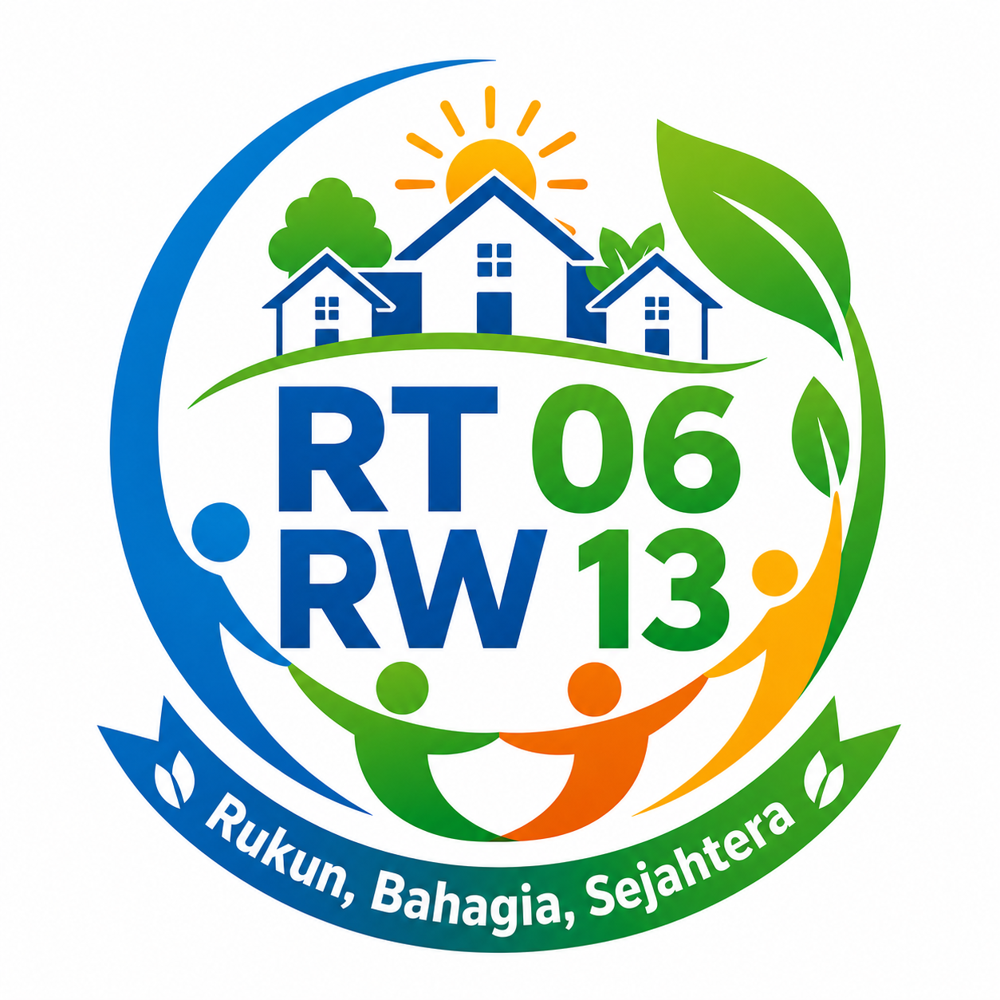

Aplikasi Database Warga
RT 06 / RW 13 Relife Greenville Cileungsi Cluster Lakesville

RT 06 / RW 13 Relife Greenville Cileungsi Cluster Lakesville

Halaman ini digunakan sebagai pintu masuk menuju aplikasi database warga RT 06 / RW 13 Relife Greenville Cileungsi Cluster Lakesville. Aplikasi ini membantu pengurus dalam melakukan pendataan, pencarian, pembaruan, dan pengelolaan data warga secara lebih rapi dan terdokumentasi.
Akses database warga bersifat terbatas dan hanya digunakan oleh pengurus atau pihak yang diberikan izin.
Membantu pengurus menyimpan data warga secara lebih tertata dan mudah dicari.
Mempermudah proses pelayanan surat pengantar dan kebutuhan administrasi warga.
Data warga dapat diperbarui ketika ada warga baru, pindah, atau perubahan keluarga.
Membantu pengurus mengetahui jumlah KK, warga tetap, kontrak, dan data lingkungan.
Data yang rapi dapat menjadi dasar perencanaan program kerja dan kegiatan warga.
Akses database dibatasi agar data pribadi warga tidak terbuka untuk umum.
Catatan: Data pribadi warga tidak ditampilkan secara terbuka pada website. Website hanya menyediakan akses masuk menuju aplikasi database dan layanan update data warga.
Data warga merupakan informasi pribadi yang perlu dijaga dengan baik. Oleh karena itu, akses ke aplikasi database warga hanya diberikan kepada pengurus atau pihak yang memiliki kewenangan.
Warga tidak disarankan mengirimkan data pribadi melalui grup umum. Untuk perubahan data, gunakan form resmi atau hubungi pengurus RT secara langsung.
Silakan klik tombol di bawah ini untuk membuka aplikasi database warga. Pastikan akses hanya digunakan oleh pengurus atau pihak yang diberikan izin.